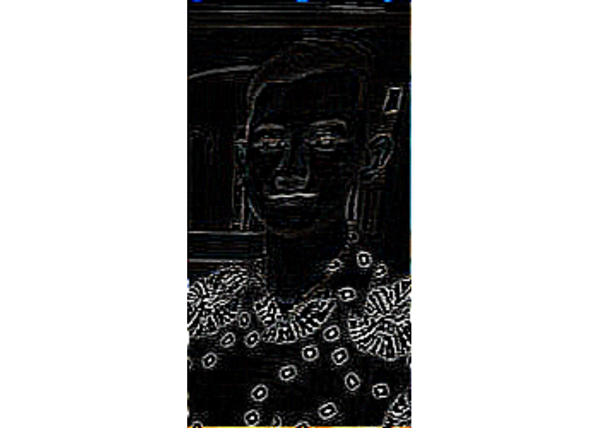

Materi
Abdurrozzaaq Ashshiddiqi Zuhri
3/15/2021
Install Package EBImage
Pertama kita harus menginstal package EBImage terlebih dahulu. Karena di CRAN package ini tidak tersedia, maka kita akan menginstall package BiocManager terlebih dahulu dengan menggunakan kode sebagai berikut :
if (!requireNamespace("BiocManager", quietly = TRUE))
install.packages("BiocManager")
BiocManager::install("EBImage")## Bioconductor version 3.12 (BiocManager 1.30.10), R 4.0.3 (2020-10-10)## Installing package(s) 'EBImage'## Warning in readRDS(dest): lzma decoding result 10## package 'EBImage' successfully unpacked and MD5 sums checked## Warning: cannot remove prior installation of package 'EBImage'## Warning in file.copy(savedcopy, lib, recursive = TRUE): problem copying C:
## \Users\LENOVO\Documents\R\win-library\4.0\00LOCK\EBImage\libs\x64\EBImage.dll
## to C:\Users\LENOVO\Documents\R\win-library\4.0\EBImage\libs\x64\EBImage.dll:
## Permission denied## Warning: restored 'EBImage'##
## The downloaded binary packages are in
## C:\Users\LENOVO\AppData\Local\Temp\RtmpMPs7XP\downloaded_packages## Installation path not writeable, unable to update packages: boot, class,
## cluster, codetools, foreign, KernSmooth, MASS, mgcv, nlme, nnet, spatial,
## survival## Old packages: 'Matrix', 'RCurl', 'rvest', 'tiff', 'utf8', 'waldo', 'xfun'Tahap Persiapan
Set Lokasi Kerja
# Set Lokasi Kerja
setwd("~/linear/EbiImage")Memanggil Package EBImage
Lalu kita panggil library dari EBImage untuk membaca Image
# panggil package
library(EBImage)Reading Image
Tahap terakhir dari persiapan adalah kita menginputkan gambar yang telah kita simpan dalam satu direktori dengan Lokasi Kerja kedalam environment RStudio dengan cara seperti ini.
# Set Lokasi Kerja
setwd("~/linear/EbiImage")
# panggil package
library(EBImage)
# Reading Image
Image <- readImage('ff.jpg')
display(Image)print(Image)## Image
## colorMode : Color
## storage.mode : double
## dim : 131 250 3
## frames.total : 3
## frames.render: 1
##
## imageData(object)[1:5,1:6,1]
## [,1] [,2] [,3] [,4] [,5] [,6]
## [1,] 0.6274510 0.6274510 0.6196078 0.6313725 0.6196078 0.5568627
## [2,] 0.6274510 0.6274510 0.6196078 0.6313725 0.6196078 0.5568627
## [3,] 0.6196078 0.6196078 0.6196078 0.6313725 0.6196078 0.5568627
## [4,] 0.6196078 0.6156863 0.6117647 0.6196078 0.6156863 0.5529412
## [5,] 0.6156863 0.6117647 0.5960784 0.6117647 0.6156863 0.5529412Image berisikan matriks yang memuat daftar instensitas warna dengan rentang jarak dari 0 sampai 1, data tersebut menggambarkan tingkat warna dan tingkat pencahayaan dari gambar yang dibuat. Oh ya, setiap matriks merepresentasikan setiap pixel dari gambarnya.
Brightness
Bagian Brightness ini berfungsi untuk mengatur tingkat kecerahan dari gambar yang kita telah inputkan sebelumya.
Terlihat dibagian Image1 nilainya ditambah yang akan menjadikan gambarnya lebih terang. Sebaliknya untuk Image2 nilainya dikurang yang nanti gambarnya akan menjadi lebih gelap.
# set lokasi kerja
setwd("~/linear/EbiImage")
# panggil package
library(EBImage)
# Brightness
Image1 <- Image + 0.2
Image2 <- Image - 0.2
par(mfrow = c(1,2))
plot(Image1)
plot(Image2)Adjust Contrast
Adjust Contrast berfungsi untuk mengatur kontras gambar. Kontras sendiri bermakna perbedaan luminasi cahaya atau pancaran cahaya antara gelap dan terang. Sedangkan untuk Brightness memiliki pengertian terang atau redupnya cahaya yang dipantulkan oleh objek foto.
Dibagian Image3 kita berikan angka pengali 0.5, dan hasil gambarnya akan menjadi lebih gelap. Lalu untuk Image4 kita berikan angka pengali 2 yang nantinya hasil gambarnya akan menjadi sangat cerah.
# set lokasi kerja
setwd("~/linear/EbiImage")
# panggil package
library(EBImage)
# Adjusting Contrast
Image3 <- Image * 0.5
Image4 <- Image * 2
par(mfrow = c(1, 2))
plot(Image3)
plot(Image4)Gamma Correction
Gamma Correction berfungsi untuk mengatur nilai pencahayaan yang ada didalam gambar untuk untuk mengimbangi sistem pengelihatan mata manusia.
Terlihat pada Image5 nilai dari Image dipangkatkan dengan 2 dan menghasilkan gambar yang cenderung gelap. Karena semakin tinggi tingkat Gamma Correction maka gambar akan menjadi semakin gelap. Sedangkan, pada Image6 kita berikan faktor pemangkat 0.7 dan gambar yang dihasilkan akan menjadi lebih cerah daripada gambar awalnya.
# set lokasi kerja
setwd("~/linear/EbiImage")
# panggil package
library(EBImage)
# Gamma Correction
Image5 <- Image ^ 2
Image6 <- Image ^ 0.7
par(mfrow = c(1, 2))
plot(Image5)
plot(Image6)Cropping
Fungsi dari Cropping adalah untuk memotong ukuran atau dimensi asli dari gambar. Terlihat gambar yang telah dicrop cenderung menjadi besar, karena dimensi dari gambarnya telah dipotong.
# set lokasi kerja
setwd("~/linear/EbiImage")
# panggil package
library(EBImage)
# Cropping
display(Image[50:100, 50:200,])Spatial Transformation
Materi selanjutnya adalah mengenai Spatial Transformation. Fungsinya adalah untuk memutar gambar berdasarkan posisi matrix gambar yang ditunjuk dibagian translate(rotate(..)).
# set lokasi kerja
setwd("~/linear/EbiImage")
# panggil package
library(EBImage)
#Spatial Transformation
Imagetr <- translate(rotate(Image, 45), c(50, 0))
display(Imagetr)Color Management
Pada bagian Color Management ini terdapat dua jenis, yaitu yang pertama adalah tipe Grayscale dan yang kedua adalah tipe Color.
Grayscale
Grayscale sendiri bisa diartikan dengan warna abu-abu, yang setiap pixel dari gambarnya digambarkan dengan intensitas cahaya dari gelap ke terang.
# set lokasi kerja
setwd("~/linear/EbiImage")
# panggil package
library(EBImage)
# Color Management
colorMode(Image) <- Grayscale
display(Image)## Only the first frame of the image stack is displayed.
## To display all frames use 'all = TRUE'.
print(Image)## Image
## colorMode : Grayscale
## storage.mode : double
## dim : 131 250 3
## frames.total : 3
## frames.render: 3
##
## imageData(object)[1:5,1:6,1]
## [,1] [,2] [,3] [,4] [,5] [,6]
## [1,] 0.6274510 0.6274510 0.6196078 0.6313725 0.6196078 0.5568627
## [2,] 0.6274510 0.6274510 0.6196078 0.6313725 0.6196078 0.5568627
## [3,] 0.6196078 0.6196078 0.6196078 0.6313725 0.6196078 0.5568627
## [4,] 0.6196078 0.6156863 0.6117647 0.6196078 0.6156863 0.5529412
## [5,] 0.6156863 0.6117647 0.5960784 0.6117647 0.6156863 0.5529412Color
Jika Color berarti gambarnya memiliki warna.
# set lokasi kerja
setwd("~/linear/EbiImage")
# panggil package
library(EBImage)
# Color Management
colorMode(Image) <- Color
display(Image)print(Image)## Image
## colorMode : Color
## storage.mode : double
## dim : 131 250 3
## frames.total : 3
## frames.render: 1
##
## imageData(object)[1:5,1:6,1]
## [,1] [,2] [,3] [,4] [,5] [,6]
## [1,] 0.6274510 0.6274510 0.6196078 0.6313725 0.6196078 0.5568627
## [2,] 0.6274510 0.6274510 0.6196078 0.6313725 0.6196078 0.5568627
## [3,] 0.6196078 0.6196078 0.6196078 0.6313725 0.6196078 0.5568627
## [4,] 0.6196078 0.6156863 0.6117647 0.6196078 0.6156863 0.5529412
## [5,] 0.6156863 0.6117647 0.5960784 0.6117647 0.6156863 0.5529412Filtering
Ada tiga jenis Filtering disini, yang pertama adalah dLowm yang kedua adalah fHigh dan yang terakhir adalah Noise Reduction
fLow
fLow atau low-pass filter berfungsi untuk membuat gambar menjadi blur atau kabur/ lebih smooth.
# set lokasi kerja
setwd("~/linear/EbiImage")
# panggil package
library(EBImage)
# Filtering fLow
fLow <- makeBrush(21, shape= 'disc', step=FALSE)^2
fLow <- fLow/sum(fLow)
Image.fLow <- filter2(Image, fLow)
display(Image.fLow)fHigh
fHigh atau high-pass filter berfungsi untuk membuat gambar menjadi menjadi lebih tajam atau kurang halus. Biasanya digunakan untuk mengurangi blur dari suatu gambar atau citra.
# set lokasi kerja
setwd("~/linear/EbiImage")
# panggil package
library(EBImage)
# Filtering fHigh
fHigh <- matrix(1, nc = 3, nr = 3)
fHigh[2, 2] <- -8
Image.fHigh <- filter2(Image, fHigh)
display(Image.fHigh)
Noise Reduction
Ini fungsinya untuk mengurangi noise atau bintik pada gambar.
# set lokasi kerja
setwd("~/linear/EbiImage")
# panggil package
library(EBImage)
# Noise Reduction
medFltr <- medianFilter(Image, 1.1)
display(medFltr)